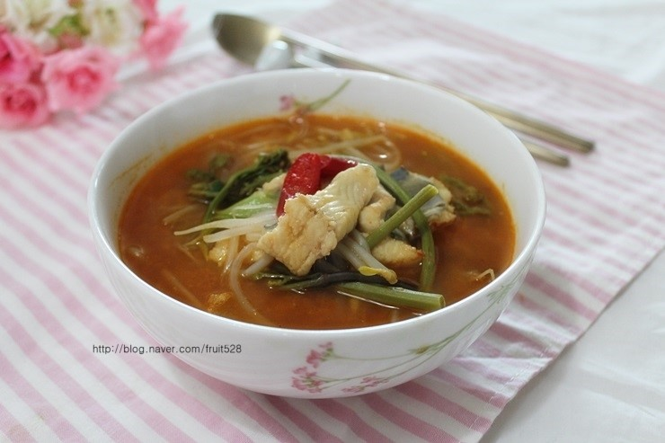

장어탕 효능 혈류개선 및 고혈압 예방 효과. 추어탕에 함유된 불포화지방산은 중성지방과 나쁜 콜레스트롤 수치를 낮추어 혈류를 개선시키며, 칼륨성분이 풍부하여 혈액 속의 나트륨을 배출해 주므로 고혈압을 예방, 개선해 줍니다
장어탕은 장어를 넣고 얼근하게 끓인 국이다. 미꾸라지를 푹 고아 걸러낸 것을 배춧잎, 숙주, 고비, 파 등을 넣고 된장과 고추장으로 간을 해서 끓인다.
https://dj01230.github.io/seomjingang/seomjingang
